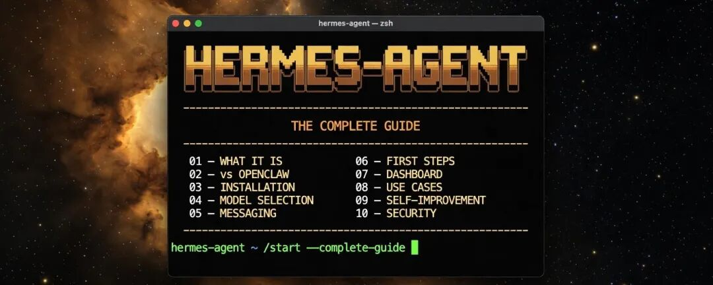
我 24/7 运行 Hermes Agent 几个月了。这是我学到的一切：安装配置、模型选择、使用场景、99% 人都用错的仪表盘、自我进化机制、安全措施。全部分享给你。
先收藏这篇文章。等你开始动手搭建的时候，你一定会需要它。
目录
1. Hermes Agent 到底是什么 2. Hermes vs OpenClaw vs Claude Code 3. 安装配置 4. 模型选择——什么任务用什么模型 5. 消息平台 6. 入手后先做的几件事 7. 仪表盘 8. 使用场景 9. 自我进化——真正的竞争优势 10. 安全（说实话） 11. 附录：完整命令参考
第一层 — Hermes Agent 到底是什么
Hermes Agent 是由 Nous Research 打造的 24/7 全天候自主 AI 员工。
一个在你睡觉时也能工作的智能体，主动识别与你的目标一致的任务，并且每一次会话都会变得更好。
三个核心差异让它与众不同：
记忆系统。 所有内容都存在你电脑的 Markdown 文件里——不上云、不黑箱。在你自己的机器上。你可以读取、编辑、删除。完全透明。
自我进化。 每完成一个任务，它都会复盘：什么做得好、什么需要改进、下次怎么做得更好。每次会话结束后，它会更新自己的技能文件。
会话记忆。 你所有历史对话都有完整日志，支持 FTS5 全文搜索和 LLM 总结。问它三个月前你们聊了什么，它能答上来。
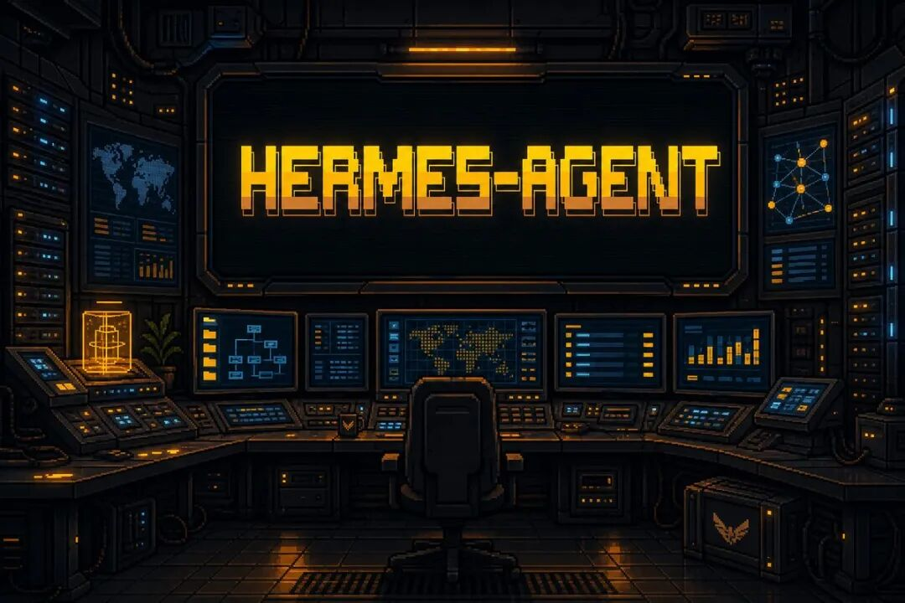
第二层 — Hermes vs OpenClaw vs Claude Code
三个工具，各有分工。下面说清楚它们各自的适用场景。
Hermes vs OpenClaw
OpenClaw 越来越臃肿，速度变慢，每次更新都会破坏已有配置。对于天天和 AI 智能体打交道的人来说，这很痛苦；对于刚入门的新手来说，这是致命的。
Hermes 更轻量、更流畅，版本更新不会毁掉你的已有配置。仅凭这份稳定性，就值得现在切换。
Hermes 的额外优势：
• 内置多智能体协作（v0.12.0+）—— 智能体从看板中认领任务，并行工作，遇到阻塞时自动交接 • Nous Portal 内置精选模型 • 166 个可追踪技能（87 个内置 + 79 个可选），覆盖 26+ 个类别 • 20+ 个消息平台：Telegram、Discord、Slack、WhatsApp、Signal、Matrix、Teams 等
Hermes vs Claude Code vs Codex
不同的工具，不同的用途。两者都要用。
Hermes = 你的通用 AI 员工。日常任务、研究、文档处理、电子表格、电脑管理、商业顾问、原型开发。所有需要持续迭代改进的工作都交给它。可以把它想象成你的首席运营官（Chief of Staff）。
Claude Code / Codex = 深度沉浸式开发模式。大型复杂应用开发、端到端测试。双窗口并排打开，专注模式全力投入。这种时候才用 Claude Code 或 Codex。
Hermes 处理其他一切杂事，让你需要深度专注时能全身心投入。
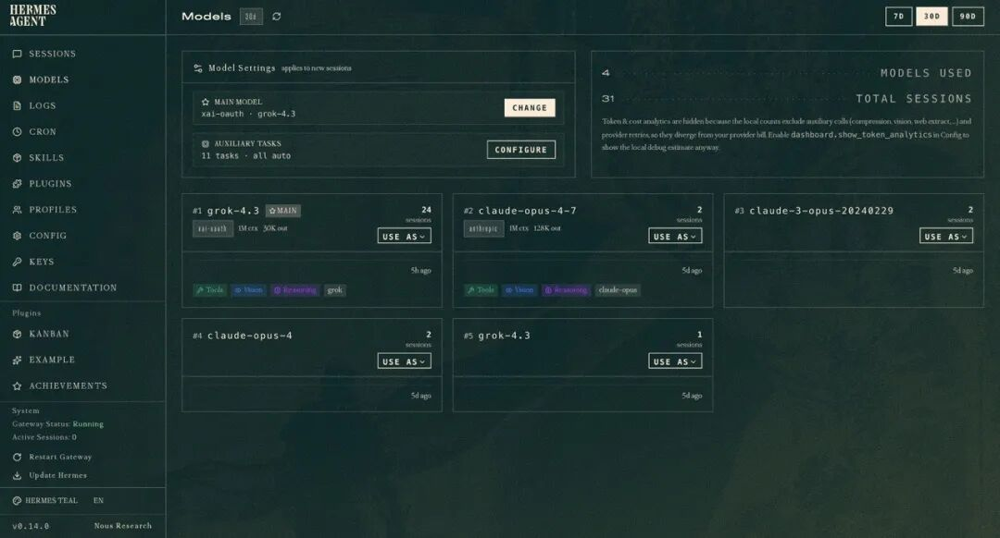
第三层 — 安装配置
一条命令搞定。就这么简单。
Linux / macOS / WSL2：
curl -fsSL https://raw.githubusercontent.com/NousResearch/hermes-agent/main/scripts/install.shWindows 原生（PowerShell）—— 早期测试版：
iex (irm https://raw.githubusercontent.com/NousResearch/hermes-agent/main/scripts/install.ps1)Android（Termux）： 与 Linux 相同的 curl 一行命令安装器 —— 安装程序会自动识别 Termux 环境。
安装完成后，启动命令：
hermes快速设置流程会引导你完成模型选择和消息平台配置。
如果你已经安装了 OpenClaw： 会提示导入记忆文件。我的建议：从头开始。两个独立的智能体各自保留记忆和技能，比混在一起更好。
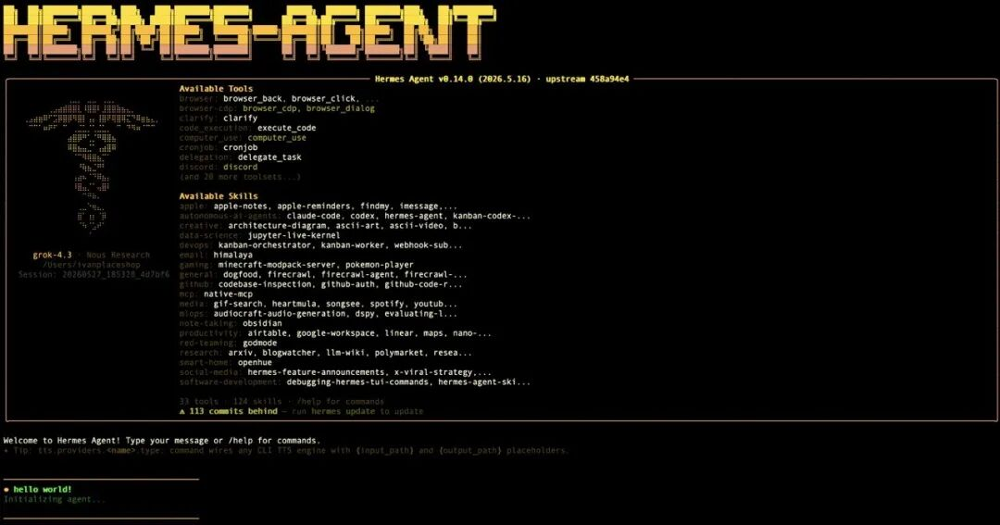
第四层 — 模型选择
三个档位。选什么取决于你要做什么，而不只是预算。
高端档 — claude-opus-4 / claude-sonnet-4
最适合： 复杂推理、长周期 /goal 任务、精细写作、商业顾问角色。Claude 处理模糊性的能力比其他模型都强。当 Hermes 需要在任务执行中途做判断时 —— 用 opus-4。当你想兼顾速度且保留 opus 90% 的质量时 —— 用 sonnet-4。
一个注意点：Anthropic 已对智能体禁用 OAuth。需要 API Key —— 按 token 计费。重度使用的话，每月几百美元预算。
中档 — GPT-5.5
最适合： 编程任务、原型开发、注重性价比的日常主力。GPT-5.4 及更早版本在智能体里几乎没法用。GPT-5.5 改变了这一点。可以直接用你现有的 $20/月 ChatGPT 订阅。同等用量下，成本只有 Anthropic 的一个零头。
新手推荐从这里起步。等你摸清楚哪些任务真正需要升级，再切到 Claude。
性价比档 — Qwen 3.7 Max、Grok、Nous Portal
Qwen 3.7 Max —— 最适合长周期自主任务。35 小时连续执行，1000+ 次工具调用不丢失上下文。在 OpenRouter 精选列表里排名第一（PR #32809）。通过 OpenRouter 使用（免费档有免费额度）。
XAI Grok —— 如果你已经订阅了 SuperGrok，这个选项很适合。OAuth 可以用。在 X 相关任务和研究上表现强，配合 xurl skill 使用效果更好。
Nous Portal —— 每月 $20 固定费用，精选模型，由 Hermes 团队打造。想要一个账单、不想管理 API Key 的人的起点。
任务 ↔ 模型快速对照表
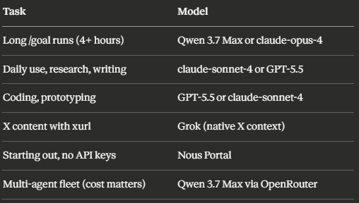
随时切换模型：
hermes model无需改代码、无需重装。不同 Profile 可以同时运行不同模型。
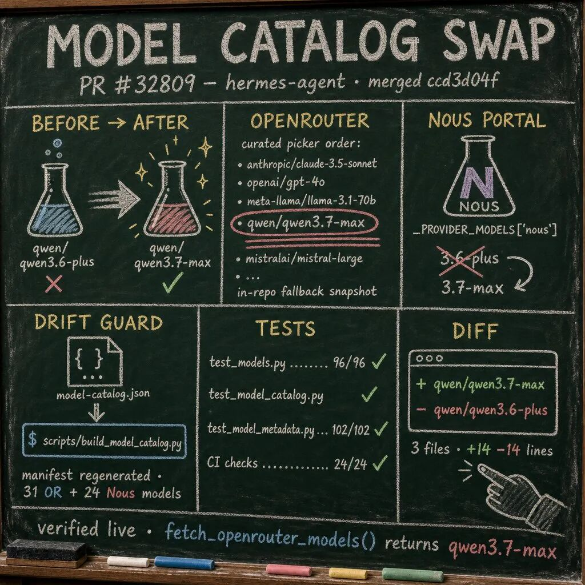
第五层 — 消息平台
选 Telegram。现在就配置好。别想太多。
Telegram 是目前唯一一个专为 AI 智能体打造消息功能的主流平台。Topic 分组、智能体间通信、功能持续更新。免费。
配置方法：安装时 Hermes 会引导你完成。从 Telegram 的 BotFather 复制一个 token 粘贴进 Hermes。搞定。总共五分钟。
其他支持的消息平台（如果你需要的话）：Discord、Slack、WhatsApp、Signal、Matrix、Mattermost、Email、SMS、钉钉、飞书、Microsoft Teams、Google Chat 等。一个网关进程支持 20+ 平台。
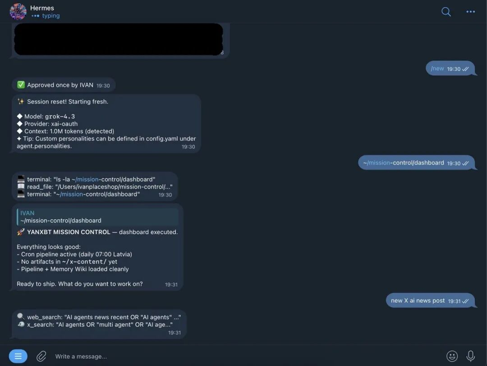
第六层 — 入手后先做的几件事
新员工入职第一天：你得告诉他们你是谁。
第一步：让 Hermes 认识你
用这条消息作为你的第一条输入（填入你的信息）：
以下是我的基本情况和工作内容：
姓名：[你的名字]
我的身份：[你的角色 / 所在行业]
我正在做的事：[当前项目]
我的目标：[未来 3-6 个月想达成的目标]
我的工作习惯：[你的工作风格、偏好、时区]这些信息会被写入记忆。从现在开始，Hermes 做的每一项主动任务都会以这些目标为基准。跳过这一步，它就是在盲目工作。
第二步：设置你的第一个定时任务
Cron 任务是定时自动执行的任务。用自然语言描述就行，不用写代码。
我想让你每天凌晨 2 点给自己安排一个任务。这个任务应该是一个小型应用、界面或工具，
帮助我们更接近我的个人目标和理想。它应该能节省我们的时间、提高效率，
或者在某些方面特别有用。确保它能给我惊喜，让我开心。每天早上醒来，都有一个为你专门打造的新东西在等着你。这就是你的智能体在工作的证明。
第三步：学会 /goal 命令
/goal 是 Hermes 最强大的命令。它把智能体从被动聊天机器人变成后台工作者。你设定一个目标，Hermes 拆解成任务，自主执行，直到完成。
核心 /goal 命令：
/goal [描述] # 启动自主执行
/goal status # 查看当前运行状态
/goal pause # 暂停（不丢失上下文）
/goal resume # 暂停后继续
/goal clear # 结束当前目标
/subgoal [文本] # 执行中途追加条件完整的 /goal 使用指南，包含 21 个可直接复制的流程模板（涵盖研究、销售、内容、邮件、运营、开发等领域）→ The Complete Hermes /goal Playbook
关于如何写出高质量目标、max_turns 配置以及避免常见错误 → Hermes /goal — 完整指南
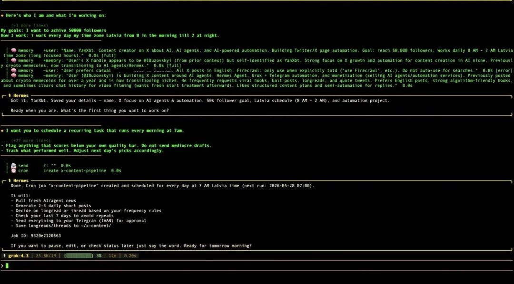
第七层 — 仪表盘（99% 的人都用错了）
hermes dashboard在浏览器中打开，地址是 localhost:9119。
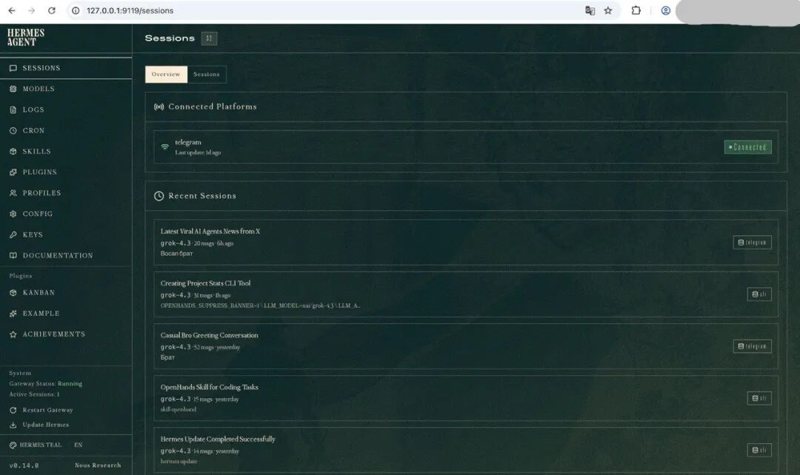
先打开「Skills」标签页。那才是真正创造价值的地方。
Models 标签
无需打开终端，直接在页面上切换模型。不同 Profile 可以设置不同的模型。
Cron 标签
查看所有定时任务。也可以在这里手动创建更复杂的任务，比在 Telegram 里打字有更多控制权。
Skills 标签
Hermes 学到的每个技能都在这里。可以浏览、开关、阅读 Markdown 文档。
一个被充分使用的智能体：150+ 个技能。它能用名字调用你的特定工作流。它能做一些你从未专门教过它的事——因为它从观察你的行为中学会了。
建议立即开启的内置技能：
• 浏览器自动化（Browser automation） —— 让 Hermes 爬取网页、提取数据、与页面交互 • 电脑控制（Computer use） —— 让 Hermes 控制你的屏幕、移动文件、打开应用 • 图像生成（Image generation） —— 连接 OpenAI 或 Grok 图像模型，在任务执行过程中直接生成素材 • 视频生成（Video generation） —— 直接从你们的对话内容生成视频
Plugins 标签
通过 API Key 解锁额外能力。开启 browser-use、fire-crawl、computer-use。你已有的任何 API Key 都可以在这里接入，扩展 Hermes 的能力。
Profiles 标签
这里是多智能体配置的入口。
一个 Profile = 一个拥有独立记忆、技能和模型的 Hermes 实例。为不同角色创建多个 Profile：首席运营官、内容总监、研究智能体、DevOps 工程师。
同时运行。各有所长。各自进化。
看板（Kanban）—— 最强大的界面
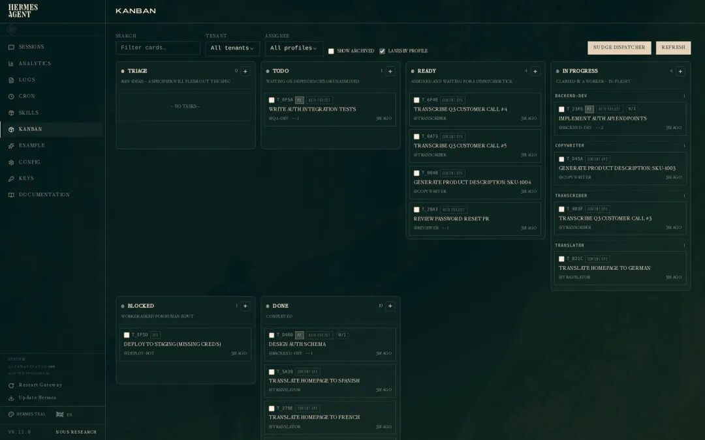
正确的用法：
每天早上，把你的待办清单写下来。把所有 AI 智能体能处理的任务挑出来，扔进 Triage（待分类） 列。然后走开，去做早餐。
自动发生的事：
1. Hermes 从 Triage 取走每个任务 2. 拆分成子任务 3. 移动到 To-Do 列 4. 给子智能体分配子任务 5. 并行执行
等你早餐吃完，待办清单的一半已经完成了。
状态流程：Triage → To-Do → Ready → In Progress → Blocked → Done
后台守护进程持续运行（v0.16+），每 60 秒检查一次新任务。不依赖 Cron 轮询，不在任务间隔浪费 token。
第八层 — 使用场景
1. 每日学习导师
发现了一个有用的 YouTube 视频？不要只是看完就忘。
「看看这个视频。读一下字幕。然后每天早上 8 点给我发一条消息，讲解视频里的一到两个概念，然后出题考我。」[粘贴 YouTube 链接]
Hermes 抓取字幕、提炼 10 个核心概念、设置定时任务。每天早上 8 点：知识点 + 小测验发到你的 Telegram。
把每个你看过的教育视频都这样做。你不会再看完就忘。
2. 跨设备电脑管理
在你所有设备上安装 Tailscale（免费）。现在 Hermes 可以访问你的每一台机器。
在世界任何地方，用手机就能操作：
「把我 Mac Studio 上的 agent.md 文件传到我的 MacBook Pro 上。」
搞定。任意文件，任意设备。不需要 SSH、不需要 Google Drive、不需要手动传输。
对开发者同样有用：在不物理到达那台机器的情况下，测试运行在其他机器上的本地服务。
3. 会话记忆召回
「提醒我一下，上个月我们讨论过哪些商业想法？」
每次对话都有日志。你提过的每个想法，随时可以召回。两个月前分享的链接是什么。三个月前在做什么项目。
这是其他 AI 智能体都没有的功能。FTS5 全文搜索 + LLM 总结，跨越你的全部历史记录。
4. X 内容工作流（xurl）
xurl 是 Hermes 的一个技能，赋予你的智能体直接访问 X 的能力——搜索帖子、阅读讨论、发布内容。
它本身只是一个执行工具。结合 /goal、研究技能和记忆系统，它就变成了一套持续运转的内容系统。
有效的完整工作流：
「hermes goal "每天早上和晚上，研究 X 上最新的 AI 智能体讨论，分析是否符合我的内容风格，检查已发布话题，生成推文串，评估病毒传播潜力分数，如果通过标准就通过 xurl 发布。"」
分阶段构建：数据收集 → 风格检查 → 重复检查 → 起草 → 质量评分 → 发布决策。
关键错误：不要在第一天就让它自动发布。先手动审核 5-7 次输出，观察质量再决定。
5. 任务控制中心
让 Hermes 帮你建一个自定义仪表盘：
「给我建一个任务控制台，我们可以在里面添加各种工具来优化工作流。先从这些开始：一个内容流水线（我可以添加想法，你来推进）、一个记忆维基（展示我们合作过的所有内容）、一个文档页面（展示我们创建过的所有产出物）。」
不需要写代码。描述你想要什么，它来建。
按需添加工具。你的仪表盘会变成一个专为你的工作方式定制的界面。
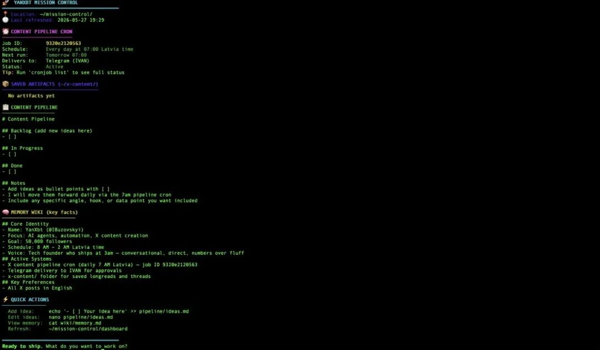
6. 原型快速构建
在健身房，刚想到一个点子。掏出手机打开 Telegram。
「给我做一个 [这个点子] 的着陆页。一页，Hero 区、3 个功能介绍、定价、CTA。部署到 localhost，把链接发给我。」
一个小时后回来。原型已经准备好了。
Hermes 从记忆里知道你的技术栈。它不会问你用哪个框架。它直接用你一直用的那个。
7. 商业顾问
「我在考虑 [某个决定或问题]。背景是这样的：[粘贴背景信息]。最有力的三个支持和反对理由分别是什么？如果是你，你会怎么做？」
和 ChatGPT 不同，Hermes 了解你的业务、你的目标、你的约束条件。给你的建议是经过你的实际情况过滤的，不是泛泛的框架。
8. 夜间长周期 /goal 运行
睡前给 Hermes 一个复杂的任务。
「/goal 帮我做一份 [竞品1]、[竞品2]、[竞品3] 的竞品分析报告。覆盖：定价、功能集、内容策略、近 30 天表现最好的帖子、预估团队规模、最新融资或动态。格式化成结构化 markdown 文档，保存到文件。」
醒来就有一份人力资源分析师需要整整一天才能完成的调研报告。
同样适用的场景：代码重构、数据库迁移、全栈应用开发、SEO 审计、内容日历规划。
复杂夜间任务建议调高 max_turns：
默认值是 5-10。只有当任务确实需要更多步骤时才调高：
hermes config set goals.max_turns 20 # 调研、报告、内容起草
hermes config set goals.max_turns 50 # 代码重构、多步构建没有充分理由不要调更高。每一步都要消耗 token。
9. 多智能体组织架构
多智能体模式让组织架构图变成现实。
为每个角色创建独立的 Profile：
Profile：首席运营官
soul.md：你是所有智能体的协调者。早上 7 点晨会简报。将研究任务委托给研究负责人，将内容任务委托给内容负责人。汇总各方结果后向你汇报。
Profile：研究负责人
soul.md：你负责信息收集。监控 X 上 [细分领域] 的热门帖子。追踪竞品动态。发送每周情报简报。
Profile：内容负责人
soul.md：你负责内容生产。根据研究简报起草帖子。将文章改写成 5 种格式。维护内容日历。
一条晨会简报在 Telegram 发给你。多个智能体并行工作。你只管看最终输出。
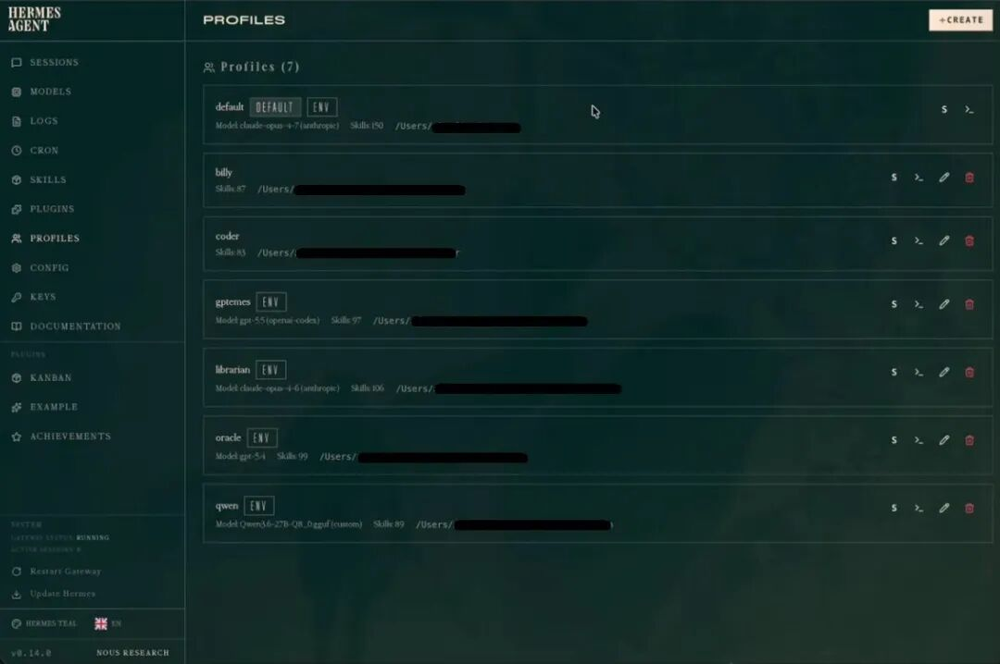
第九层 — 自我进化（真正的竞争优势）
自我进化循环是其他智能体都没有的东西。
循环机制：
1. 你给 Hermes 一个任务 2. 它执行 3. 完成后复盘：什么做得好、什么不够好、最优路径是什么 4. 将复盘结果存为 ~/.hermes/skills/ 下的一个技能文件 5. 下次你给同类任务，它直接调用那个技能
你纠正它一次。它不会再犯同样的错误。
运行六个月后，它对你的了解比人类助理还深入：
• 你喜欢什么样的格式 • 哪些工具适合你的具体工作流 • 你在不同场景下偏好的语气 • 哪些捷径可以用、哪些要绕开
技能文件是透明的。 它们以 Markdown 格式存在你电脑上。你可以打开、阅读、编辑。没有黑箱。
版本更新会自动带来新技能。 电脑控制、视频生成、Qwen 3.7 Max 支持。Nous Research 的每次更新都扩展它的能力范围，同时不会破坏已有功能。
查看所有可用工具并配置它们：
hermes tools建议立即开启：browser-automation、computer-use
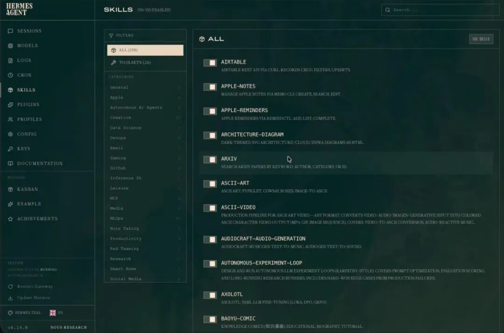
第十层 — 安全（说实话）
日常使用场景下，Hermes 的安全风险被严重夸大了。
它只做你告诉它做的事。
让它做一个演示——它就做演示。它不会顺手打开你的照片文件夹。让它查一个比分——它就查比分。它不会把你的消息泄露到任何地方。
唯一可能造成灾难性安全事件的场景，是你明确告诉它去做灾难性的事。下笔之前先想想。这是基本的安全模型。
个人使用不需要这些东西：
• 独立的 iCloud 账号 • 独立的 Google 账号 • VPS（AI YouTuber 们推荐 VPS 的内容都是赞助的——他们自己根本不用） • 虚拟机隔离
你真正需要的是：
• 常识 • 在执行任何有破坏性的操作前，审核一下 prompt • 在你的 soul.md 里写入一条底线原则：「未经明确确认，永远不向任何人转账」
装在你的主力电脑上。用好的判断力。就这样。
如果出了问题：去 Claude Code 或 Codex 打开 Hermes 的文件夹，说「我遇到了这个问题，请帮我修复。」能解决 100% 的问题。
对于接入敏感系统的生产级智能体， Hermes 提供完整的安全套件：
第一层 — Bitwarden Secrets Manager（凭证管理）
hermes secrets bitwarden setup # 向导：安装 bws，输入 token
hermes secrets bitwarden status # 验证连接
hermes secrets bitwarden sync # 预演：查看哪些内容将被应用.env 里只放一个引导 token。 所有真实凭证存在 Bitwarden 里。每个 Hermes 实例启动时拉取凭证。在网页端更新一次密钥 —— 所有实例重启后自动同步。网页 UI 即时吊销。免费档即可使用。
第二层 — iron-proxy 出站防火墙（凭证保护）
hermes egress install # 下载 iron-proxy 二进制文件，SHA-256 校验
hermes egress setup # 交互式向导
hermes egress start # 启动托管代理守护进程
hermes egress status # 二进制 + 配置 + 活跃映射
hermes egress setup --from-bitwarden # 代理启动时从 BSM 拉取真实凭证不是把真实凭证注入沙盒，而是让 Hermes 给智能体提供不透明的代理 token。iron-proxy 在网络边界拦截请求，换成真实凭证后再转发。沙盒里永远没有真正的密钥。沙盒被攻破 —— 攻击者拿到的只是代理 token，在代理后面才有效。
两层组合使用：在 Bitwarden 里轮换，全网沙盒自动同步。一个网页 UI 操作，全量实例生效。
完整的架构解析，以及与 CrewAI、LangGraph、LangChain 的对比 → Hermes x Bitwarden — AI 智能体真正需要的安全套件
核心洞察
ChatGPT 和 Claude 都很强大。但每次对话都从零开始。没有记忆、没有进化、没有上下文。停止使用一周，就像你们从未认识过。
Hermes 有复利效应。
第一天：它对你一无所知。
第一个月：它知道你如何工作、在做什么项目。
第六个月：它知道你怎么思考、你每天做哪些任务、每个任务的最优执行方式。
记忆。进化循环。信任。这三件事是 AI 智能体的真正瓶颈。模型的问题已经解决了。
Hermes Agent 解决了这三件事。开源。智能体本身 $0。
基础设施已经就绪。搭起来，用起来。
→ 关注我 —— 每周分享 AI 智能体蓝图 → 收藏本文 —— 配置 prompt 值得收藏备用 → 在评论区留言"HERMES" —— 我把完整的 soul.md + 定时任务模板发给你
资源
官方资源：
• Hermes Agent 官方文档 —— 安装、配置、完整 CLI 参考 • Skills Hub —— 社区技能，浏览和安装 • GitHub —— 源码、问题、PR
如果你觉得这篇内容对你有启发，欢迎在留言区聊聊你的看法。
关注我，我会持续分享高质量的技术与思考干货。👇